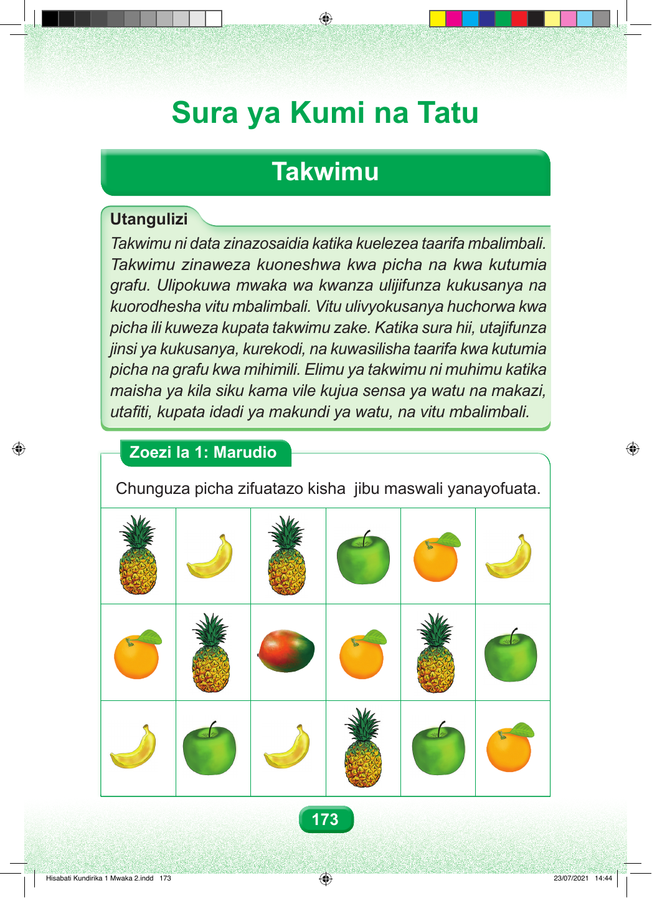

Sura ya Kumi na Tatu Takwimu Utangulizi Takwimu ni data zinazosaidia katika kuelezea taarifa mbalimbali. Takwimu zinaweza kuoneshwa kwa picha na kwa kutumia grafu. Ulipokuwa mwaka wa kwanza ulijifunza kukusanya na kuorodhesha vitu mbalimbali. Vitu ulivyokusanya huchorwa kwa picha ili kuweza kupata takwimu zake. Katika sura hii, utajifunza jinsi ya kukusanya, kurekodi, na kuwasilisha taarifa kwa kutumia picha na grafu kwa mihimili. Elimu ya takwimu ni muhimu katika maisha ya kila siku kama vile kujua sensa ya watu na makazi, utafiti, kupata idadi ya makundi ya watu, na vitu mbalimbali. Zoezi la 1: Marudio Chunguza picha zifuatazo kisha jibu maswali yanayofuata. 173 Hisabati Kundirika 1 Mwaka 2.indd 173 23/07/2021 14:44